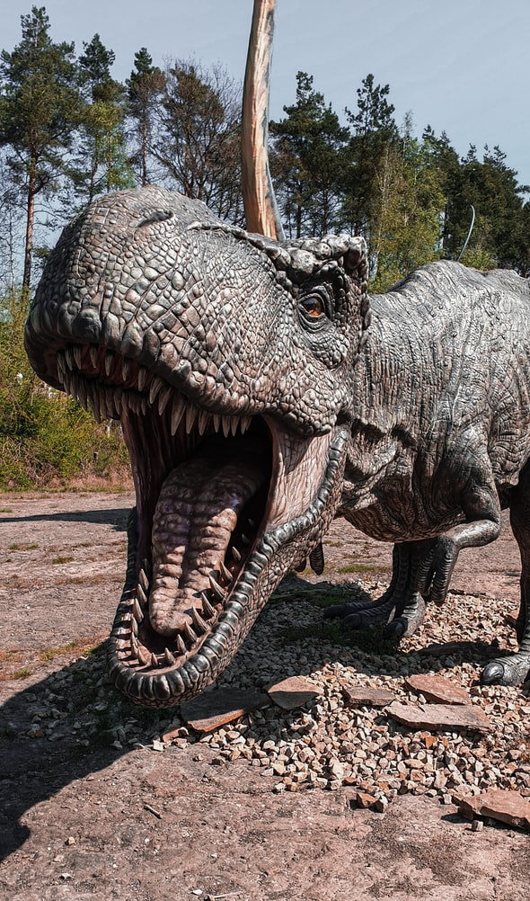
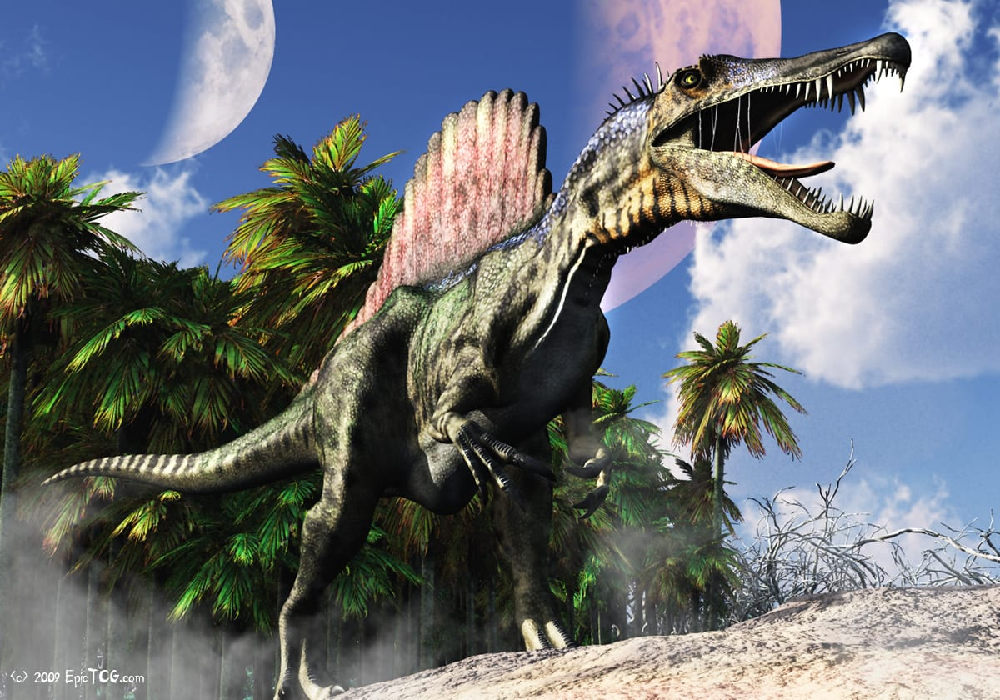
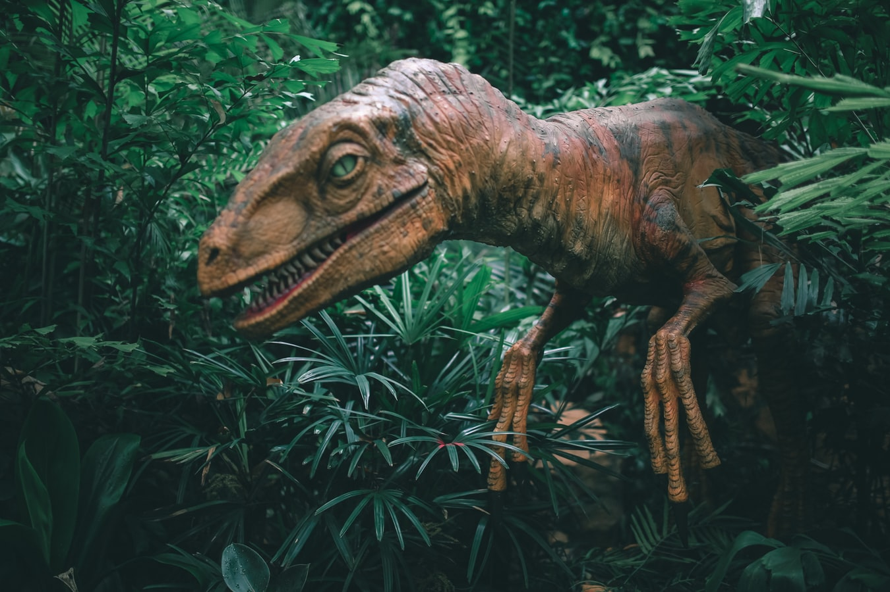
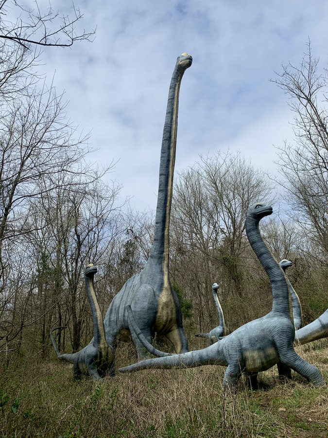
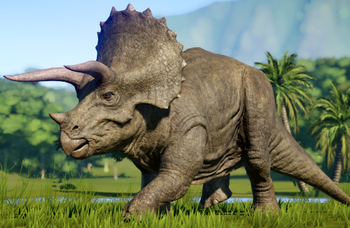

Animais Extintos
- 
- 

- 
- 
- 
Tiranossauro Rex
Ou lagarto tirano rei! Tyrannus vem do latim e do grego tyrannus e significa líder supremo. Já a palavra saurus significa lagarto, e quanto ao rex, significa rei em latim.
Esse rei do final do período cretáceo faz parte do gênero de dinossauros terópodes celurossauros que viveram durante há aproximadamente 66 milhões de anos na região que hoje é a América do Norte. O único representante do gênero é o Tyrannosaurus rex, que é o rei por ser o maior dinossauro carnívoro conhecido quando foi descoberto, hoje já temos o Spinosaurus aegyptiacus como o maior dinossauro carnívoro, mas o rex não deixou de ser o rei.
Ele foi um carnívoro bípede, com um crânio cilíndrico e uma grossa e musculosa cauda, assim como suas pernas. Entretanto, seus braços eram extremamente curtos e finos, e possuiam dois dedos e tres nos pés. Quando adultos poderiam atingir cerca de 4 metros de altura e 12 metros de comprimento, com uma massa de mais de 8 toneladas. As fêmeas eram maiores que os machos (nada de novo na natureza que conhecemos).
Apesar de não ser mais o maior dinossauro carnívoro, sua mordida era a mais poderosa dentre os dinossauros e exercia uma pressão de 6 toneladas. Eles tinha 60 dentes bem irregulares, indo de menos de 20cm até mais de 30cm. E essa mordida fatal era acompanhada de uma velocidade superior a 40km/h quando o animal estava em um bote.
Spinosaurus aegyptiacus
O Spinossauro é o carnívoro que tirou a coroa do Tiranossauro Rex e sentou no trono como o maior dos carnívoro. Ele era um terópode que chegava a pesar 7 toneladas e tinha 15 metros de comprimento. Sua característica mais marcante era o focinho estreito em conjunto com a vela que carrega nas costas, como se fosse um leque aberto.
Tinha a boca parecida com a de um crocodilo, cheia de dentes cônicos. E a calda semelhante a um remo e praticamente sem ossos ao longo do comprimento, o que a deixava ondular de um lado para outro, impulsionando o animal por meio da água. Pesquisadores afirmam que este foi o primeiro dinossauro semiaquático.
Deinosuchus
O Deinosuchus, mais famoso como “crocodilo do terror”, era um crocodilo pré-histórico gigante que possuía dentes do tamanho de uma banana, e tão comprido quanto um ônibus, fazendo os dinossauros de alimento. Sua descoberta foi publicada e suas características relatadas num artigo no Journal of Vertebrate Paleontology.
Ele fazia parte de uma família de crocodilos gigantes que viveram na América do Norte, mais precisamente, no final do período Cretáceo, cerca de 75 a 82 milhões de anos. Possuia um focinho longo e largo, inflado na frente ao redor do nariz e chegavam a mais de 10 metros e quase quatro toneladas. Hoje, um crocodilo pesa em torno de 300 kg e mede não mais que cinco metros.
Velociraptor
Esse é o queridinho das crianças, seu nome significa ladrão rápido ou veloz.
Podiam alcançar 40km/h em uma corrida, eram ágeis e surpreendentes quando atacavam suas pressas, fazendo jus ao nome.
Diplodoco
Esse dino enorme e de pescoço bem comprido tem esse nome devido ao fato de possuir, na parte posterior da cauda, duas fileiras de ossos. Diplo, em grego, significa dois. Dokos: viga. Diplodoco siginifica "dupla viga".
Tricerátops
O famoso dino tem esse nome devido a uma característica física marcante: seus três chifres, sua principal arma de ataque. Em grego, Tricerátops significa "rosto com três chifres".
FAQ
- De onde surgiu o termo "dinossauro?"
- Com a descoberta dos fósseis de répteis extintos, os cientistas precisaram de um nome para identificar esses animais gigantes. Foi então que Richard Owen surgiu com a palavra dinossauro, em 1841. Para isso, ele combinou as palavras gregas deinos, que significa "terrível", e saurus, que significa "lagarto". Apesar de hoje sabermos que os dinossauros não são lagartos, esse nome descrevia bem os primeiros fósseis encontrados. Atualmente, os novos dinossauros são nomeados pela pessoa que descobriu seus fósseis ou pelo paleontólogo que verifica se os fósseis encontrados são realmente de um novo dinossauro.
- Em que época viveram os dinossauros?
- Os dinossauros existiram durante aproximadamente 160 milhões de anos, na era Mesozóica. Os dinossauros do período Triássico eram relativamente pequenos. Durante o período Jurássico muitas espécies sobreviventes do Triássico evoluíram, surgindo os gigantes saurópodes, como o Apatossauro e o Seismossauro. A maior diversidade de dinossauros existiu durante o período Cretáceo; os monstruosos gigantes carnívoros como o Tiranossauro e o Giganotossauro, o couraçado Ankylossauro e a Maiassaura viveram nessa fase. Ao contrário do que vários filmes e histórias em quadrinhos apresentam, o encouraçado Estegossauro (Jurássico) nunca enfrentou o Tiranossauro (Cretáceo).
- Existiram dinossauros no Brasil?
- Cerca de 30 espécies de dinossauros não aviários já foram descobertas no Brasil até agora, incluindo animais como Oxalaia quilombensis, Staurikosaurus pricei, Mirischia asymmetrica, Amazonsaurus maranhensis, Brasilotitan nemophagus, Irritator challengeri (mesmo que Angaturama limai) e Gondwanatitan faustoi. O maior dinossauro já encontrado no país é o Austroposeidon magnificus, de cerca de 25 metros de comprimento.[160] Atualmente, existem mais de 1900 espécies conhecidas de aves no Brasil.[161]
- Existiam seres humanos na época dos dinossauros?
- Não. Qualquer filme que envolva homens e dinossauros é pura ficção. Enquanto faz 65 milhões de anos que os dinossauros foram extintos, o Homo sapiens começou a evoluir há 200 mil anos.
Contato

- animais_extintos@gmail.com
- +55 (21) 99999-9999
- Rua do Centro
- Rio de Janeiro, RJ